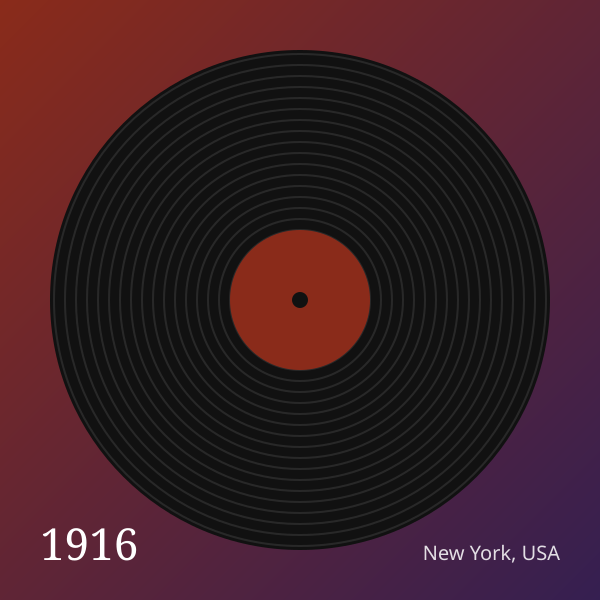

Answering a defeat from the year 451

Ghevont Alishan's 1850 poem "Bam Porotan" calls Armenians to remember Avarayr, the battle of 451 in which Vartan Mamikonian fell defending the faith. That defeat has been commemorated for fifteen centuries.
In New York on 11 October 1916, with the Armenian Genocide still under way, Torcom Bézazian recorded it for Victor (69102, matrix B-18462). It is a diaspora singer keeping a very old account open, at the worst possible moment.